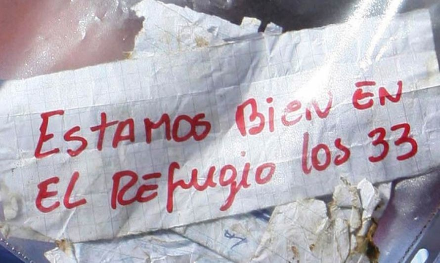
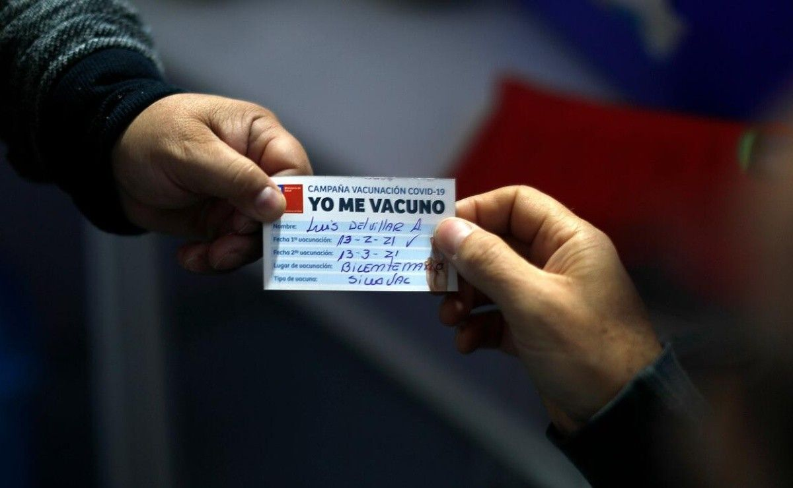
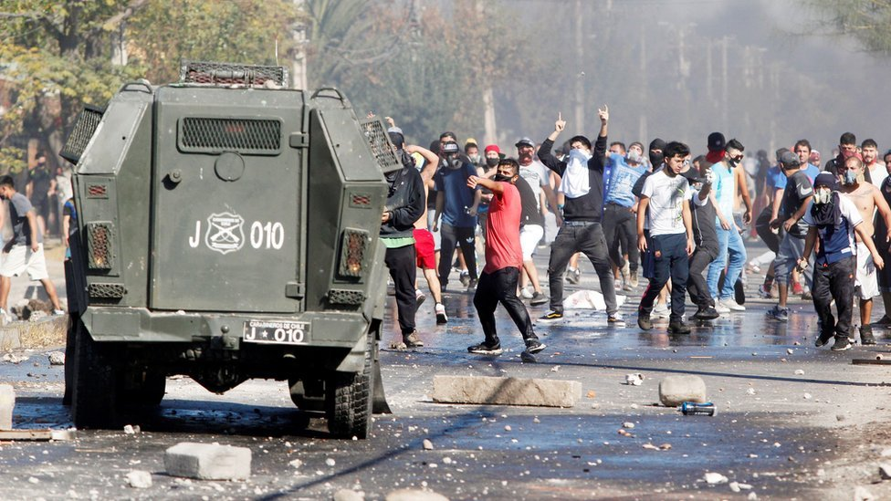
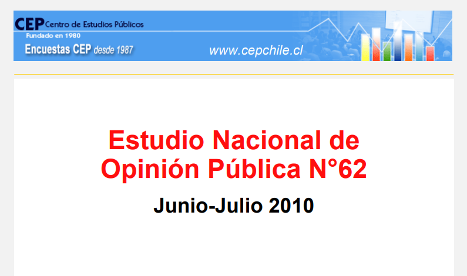
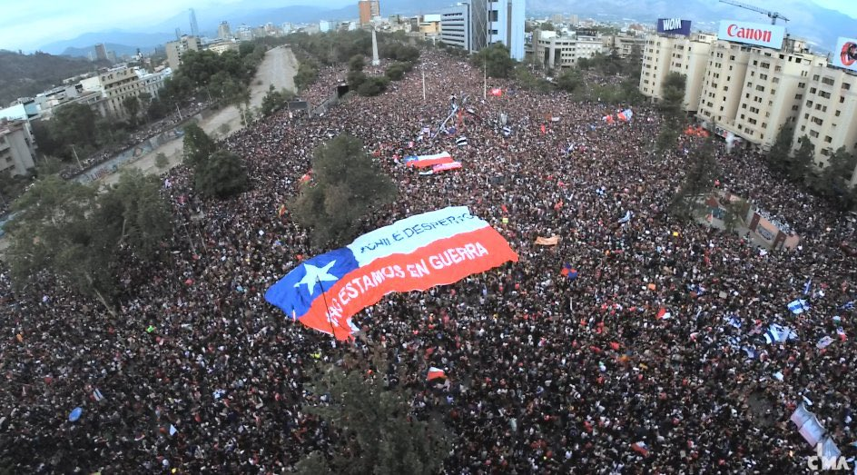
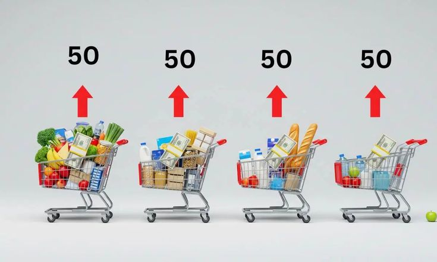
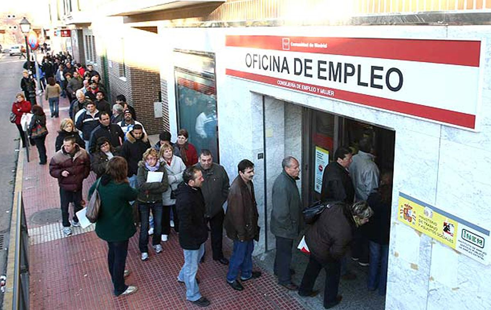

Desde 1990, Chile ha tenido 8 gobiernos y solo 6 presidentes.
Chile 1990 – 2026
Cada gobierno recibe un país y entrega otro.
Pusimos cara a cara los datos reales con lo que opinaba la gente, para que cada quien saque sus propias conclusiones.
Baja para empezar ↓
Desde 1990, Chile ha tenido 8 gobiernos y solo 6 presidentes.



A unos les tocó crecer. A otros, crisis, terremotos o una pandemia.

Cada uno recibió un país y lo entregó distinto.

Y en cada gobierno, la encuesta CEP midió cuánto los aprobaba la gente.

¿Calza lo que siente la gente con lo que muestran los datos?
Economía

Es lo que más se nota en el bolsillo.
Inflación es cuando todo se pone más caro.
El carro: cada gobierno parte con un carro lleno. Año a año, con la misma plata, alcanza para menos comida.
En rojo, lo que se perdió ese año. Vacío, lo que ya se había perdido antes.
Datos: IPC del Banco Central. Ojo: los sueldos también suben, y eso no está aquí.

¿Hay pega o no hay pega?
Cuánta gente busca trabajo y no lo encuentra.
Se mide en %: de cada 100 personas que quieren trabajar, cuántas no encuentran trabajo.
La maleta: el pedazo que le falta son los que buscan trabajo y no lo encuentran. Datos del INE, vía Banco Central. En 2010 el INE cambió su forma de medir.
Seguridad
Cuántas personas son asesinadas en Chile cada año.
Las balas: imagina un grupo de 100.000 personas. Cada bala es una persona de ese grupo que fue asesinada en el año.
Más balas, más muertes.
Datos: Banco Mundial e informe oficial de homicidios del Gobierno de Chile (desde 2018). En los años 90 no hay cifra exacta: fue aproximadamente menos de 3,5.
Robos violentos en Chile.
Lo que le puede pasar a cualquiera en la calle o en su casa.
Miramos los robos violentos: cuando te roban con golpes o amenazas, de sorpresa (lanzazos) o te quitan el auto (portonazos).
El reloj: es una hora en Chile. Cada persona roja al lado es un robo violento en esa hora. Más personas, más robos.
Datos: denuncias y detenciones registradas por Carabineros y PDI (CEAD, Subsecretaría de Prevención del Delito), de 2005 a 2025. Ojo: si la gente denuncia más, el número sube aunque no haya más robos.
8 presidentes. Elige uno y mira qué le tocó, qué hizo y qué pensó la gente.
0000 – 0000